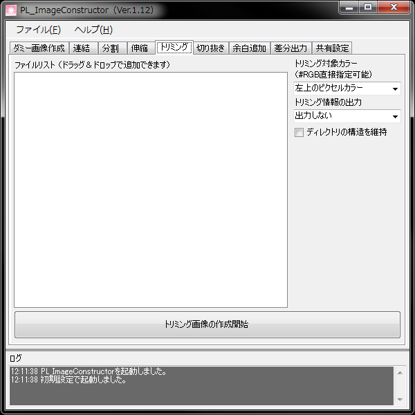

画像データの上下左右にある余白を切り取ります。
Photoshopのバッチを利用すれば同等の成果が得られますが、このツールは同時にトリミング情報をHTMLで出力する事ができます。
ゲーム制作において、その情報をオフセット値として使用するなどの用途があります。
- トリミング対象カラー
トリミングする色を指定することができます。
色は、リストから指定するほか、入力する事で任意のものに変更する事もできます。
色指定はRGB表記となります。
- トリミング情報の出力
トリミングされた位置などの情報を出力する形式を指定します。
- ディレクトリの構造を維持
登録されたファイルのフォルダ構成再現して出力します。